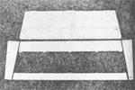
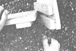
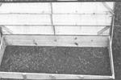
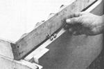

Cold Frame Plans For The Garden
Learn how to build a garden cold frame that is easily removable during the off-seasons.
By the Mother Earth News editors
January/February 1979
In the early spring, a cold frame can be as valuable to the gardener as his or her right arm. During the rest of the year, however, one of these little hothouses just takes up needed growing space.
You can solve this seasonal dilemma, though, if you build yourself a knockdown cold frame, which can be set up in minutes when it's needed and taken apart just as quickly (to be stored in the garage or wherever) after warm weather or seedling maturity make the protective enclosure unnecessary.
One of the biggest advantages of the knockdown cold frame is the adaptability of its very basic design. These structures can be built in about any size that you'd want ... either to make use of available materials or to fit in a particular corner of your garden.
Of course, you'll have to remember to allow enough inside height in your cold frame for whatever plants you intend to grow, and to slope the cover toward the front so that rain water can run off. Be certain, too, that the cover panel fits tightly over the frame (to prevent cold drafts that could injure delicate seedlings) and that you position your finished cold frame-especially in early springso that its slope faces south and can capture as much of that precious sunshine as possible.
How to Build a Knockdown Cold Frame
(See the Image Gallery for the illustrated steps of building a cold frame.)
1. The knockdown cold frame consists of five separate parts, which can be put together, or disassembled, in minutes. This basic construction technique can be used for most cold frame sizes.
2. A simple dovetail arrangement secures the corners. The joints are fixed in place by inserting a large nail into a hole drilled right through all the pieces of the assembled corner. The nail can be removed easily for disassembly.
3. Three screw eyes, two on the rear wall and one on the cover's back edge, provide a "take-apart" hinge for the cover panel (which should be topped with some type of transparent material). A nail or bolt is slipped through all three eyes to complete the hinge. Three of these assemblies will support the cover of an 8-foot cold frame.
4. The cover panel of the cold frame can be held open (for ventilation or plant tending) with two pivoting support boards. Each of these is drilled at set intervals, and a pair of matching holes (one in each end) are bored in the cover's framework. The lid can then be secured in a number of positions by inserting nails through the support boards and the cover holes.5. The completed cold frame is an excellent place to start your spring seedlings. And, in the autumn, you can set the cold frame over late crops to protect them from early frosts.
|
 PHOTOS BY THE AUTHOR 1. The knockdown cold frame consists of five separate parts, which can be put together, or disassembled, in minutes. This basic construction technique can be used for most cold frame sizes. The example shown here is about 8 feet long and 2 feet wide, and slopes from 12 inches high at the rear to only 6 inches in front. |
 2. Note this simple dovetail arrangement which secures the corners. The joints are fixed in place by inserting a large nail (as shown) into a hole drilled right through all the pieces of the assembled corner. The nail can be removed easily for disassembly. |
 3. Three screw eyes, two on the rear wall and one on the cover's back edge, provide a "take-apart" hinge for the cover panel (which should be topped with some type of transparent material). A nail or bolt is slipped through all three eyes to complete the hinge. Three of these assemblies will support the cover of an 8-foot cold frame. |
|
 4. The cover panel of the cold frame can be held open (for ventilation or plant tending) with two pivoting support boards as shown. Each of these is drilled at set intervals, and a pair of matching holes (one in each end) are bored in the cover's framework. The lid can then be secured in a number of positions by inserting nails through the support boards and the cover holes. |
 5. The completed cold frame is an excellent place to start your spring seedlings. And, in the autumn, you can set the cold frame over late crops to protect them from early frosts. |
|